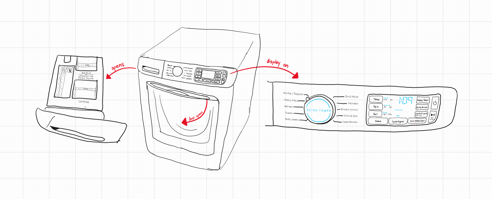
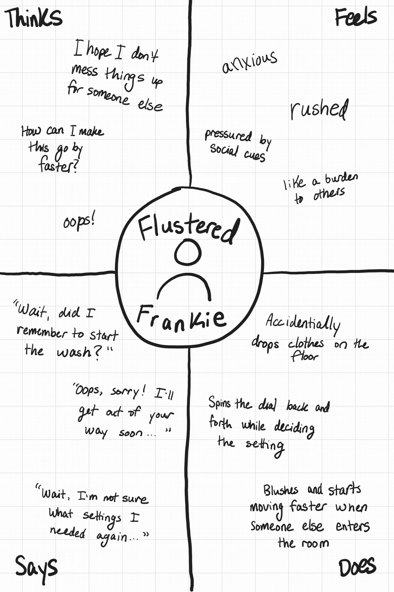
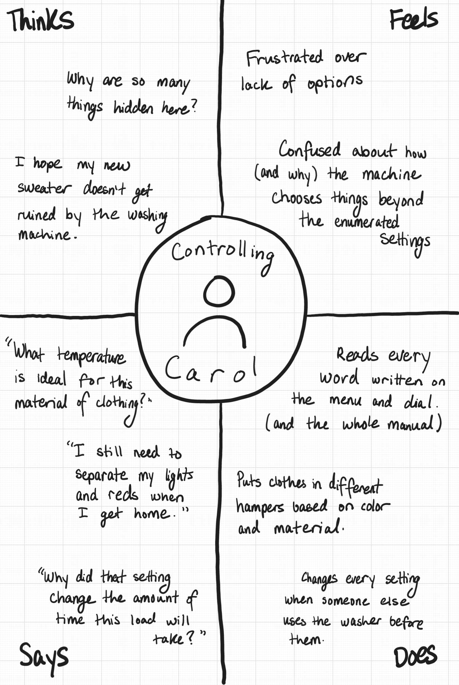

Step into a user's shoes. In this project, I observed real users interacting with an interface, interviewed these individuals about their experiences, created personas based on these users, and illustrated a storyboard based on one of the personas.
Preparation
I started this assignment with a contextual inquiry into some public-facing interface. I had to choose some interface to observe, create interview questions, and conduct interviews with users of the interface.
I chose a washing machine that is located in the shared common area in my building as my interface. It was accessible to any person in my building and it would not be strange or uncomfortable to be observed using this washing machine.
This interface is complex and has multiple moving parts, which are drawn and annotated here. The machine has two parts: a door/chamber and an "options bar", which contains a drawer, a dial with settings, and a screen with buttons attached.

sketch of washing machine interface (enlarge sketch)
The screen responds to user input via the buttons and all of the buttons and dial make sounds when used. The interface here allows users to customize and begin the clothes-washing process.
Recording Observations
During my preparations, I designed a few interview questions to ask users of the washing machine to gauge their perceptions of the interface. I observed a total of three users, taking note of their use of the machine and recording their responses to my interview questions.
These questions are:
What part of this washing machine did you look at first?
Is there any part of this washing machine that frustrates you?
Is there any part of this washing machine that you don't know “how it works”?
How does using this washing machine compare to other washing machines like it that you have used in the past?
Here, I have enumerated my observations of the users and their responses to the questions, with anonymized names. Click here to expand to see the full descriptions.User #1
Observed use of interface:
open door, first from incorrect side
load clothes into chamber then close door
turn on machine with power button
set the dial to the correct setting, overshooting then correcting to the desired position
realize forgotten detergent, turn machine off, add detergent to left hole, then turn back on machine
hold the start button and leave
Response to questions:
First the door, mainly to check if anything is still in the chamber, since it's a shared machine.
Sometimes, the buttons have a delay or don't respond the way I think they should. Also, the door locks when it starts running--it's inconvenient when I forget one thing, like a sock.
I don't understand how it detects how much I put in. I can tell because the time changes from load to load, but I have no idea how this is calculated.
It's much better than my old dorm one--it malfunctions less and I don't have to pay to use it. It's also easier, probably because there's no payment system. My old home washing machine is a top-loader, which I like because my clothes are further from the ground. Here, my clothes sometimes fall on the dirty ground, which I don't like.
User #2
Observed use of the interface:
open door, look for any clothes left behind from previous user, put in clothes
turn on machine with power button
look at the dial and read the descriptive text, setting it to the desired position
read the labels on the buttons and select appropriate ones
add detergent to left hole
hold the start button and wait for the spin cycle to start before leaving
Response to questions:
I look at the little screen with the options on it.
I don't like the start button. If you don't hold it down long enough, it doesn't start. I usually wait before I leave because, in the past, it hasn't started before.
I'm not sure what the sensors do for the “soil level” option. What changes in the machine? The temp and spin options make sense, but not soil level. I think it somehow senses weight but I don't know how.
This one is much better than top-loaders: with those, you just pour the detergent right in and get an uneven distribution. It’s harder to deal with clothes with that configuration (my clothes were soaking wet). I like that it opens from the front instead. The little screen makes me feel like I have more control and more customization.
User #3
Observed use of the interface:
open door and put clothes in
pick up detergent and pour into all of the holes
press the power on, then hold the power on when it doesn't start
spin the dial with one finger, landing on the "normal" setting
hold the on button then leave
Response to questions:
I first look at the menu bar on the wheel thing, then at the door.
I hate all of it. One thing is that there is no rational connection between the type of load I am doing and the amount of time it takes to complete a cycle.
The detergent container has two different holes, and I don't know the difference. I just end up pouring in both.
It's the newest one for me, so I have the least experience. It has a “nice”, newer feel. No coins are needed and it has higher-tech technology.
Summary of Key Observations
When observing users of the interface, I noticed a few things about how users typically interact with the washing machine. Here are some key takeaways.
multiple users opened the door from the wrong side
every user adjusted the dial, but only one used the buttons next to the screen
each user added detergent in a different way
Summary of Interview Responses
After interviewing each user, they all had different responses to my questions, but here's a summary of what they said.
Each user looked at a different part of the interface first: one at the door/chamber, another at the screen, and the last at the dial.
Multiple users reported not understanding how the washing machine sensed weight/decided how long to run.
One user mentioned that they liked this interface more than "top-loader" laundry machines, while another user expressed the inverse opinion.
There were several comments about unresponsiveness--one about all of the buttons in general and one specifically about the "start" button, which needed to be held down for an extended period of time.
One respondent mentioned that they always read over every option and setting before deciding on what selections they would make.
Personas
Having collected these observations about users, I used that information to build personas. These personas are based on overarching trends, not specific users that I interviewed. Despite this, my interviewees mostly aligned with one persona, but not exclusively.
Below are two four-quadrant empathy maps of different personas, each of which represents what that persona would think, feel, say, and do.
Persona 1: Flustered Frankie
Scattered, yet cautious: worried about "messing up" and wants to get things done easily.
This persona represents users of the washing machine who are aware of the public nature of the device and want to be extra considerate of those around them. Additionally, this user gets overwhelmed by choices and options, so prefers the interface to be clear and concise.
Potential problems with the interface:
There are lots of buttons with text on them, which means spending more time avoiding mistakes.
The door is not transparent, meaning you need to open it in order to check if there are any clothes currently in the machine.
You must hold down the start button, with no indication of when is "long enough."

Empathy map of Flustered Frankie (enlarge image)
Persona 2: Controlling Carol
Wants control over everything: loves lots of customization and options on everything.
This persona represents users of the washing machine that like to know exactly what the machine is doing and how they can change it. These users might have clothes that require special care, or might want to wash clothes in some particular way to save time, money, etc.
Potential problems with the interface:
Some of the functionality is obscured behind labels that don't clearly define what they change (soil, etc).
The detergent drawer lacks clear labels for each compartment, making the segmentation less clear.
It's not immediately clear how the cycle time is calculated.

Empathy map of Controlling Carol (enlarge image)
Storyboarding
For this last section, I created a storyboard depicting a hypothetical scenario that one of my personas, Flustered Frankie, might encounter.
The struggles of this persona and their interactions with the interface are highlighted, with each frame depicting a different part of the story.
Storyboard depicting Flustered Frankie using a washing machine (enlarge image)
This storyboard highlights four parts of the interface and Flustered Frankie's troubles involving it. To be specific:
The doors are not transparent, meaning they have to check multiple machines to find an empty one.
The machine is a "side-loader", not a "top-loader", so the door is closer to the ground and makes dropping clothes easier.
The dial and menu screen have too many options for Flustered Frankie to process.
The start button must be held for an extended period of time, which was not done successfully in the storyboard.
![comic strip with nine frames. they are captioned: Frankie carries their clothes down the stairs using a hamper. They are struggling. In the rush, Frankie drops one of their socks on the floor. Frankie picks up the sock, loosing their balance and almost fallign over. Frankie goes to use one washing machine, but finds it occupied after opening the door. They proceed to the next one, fortunately finding it empty. As they load their clothes in, Frankie knocks thier hamper over, spilling more clothes. Frankie stares at the options on the machine, but is confused by all the options. They pick some at random. Someone else enters and startles Frankie! They fall over and apologize. In the rush to leave, Frankie doesn't press the 'start' button for long enough, and the machine doesn't start washing.](assets/storyboard.png)